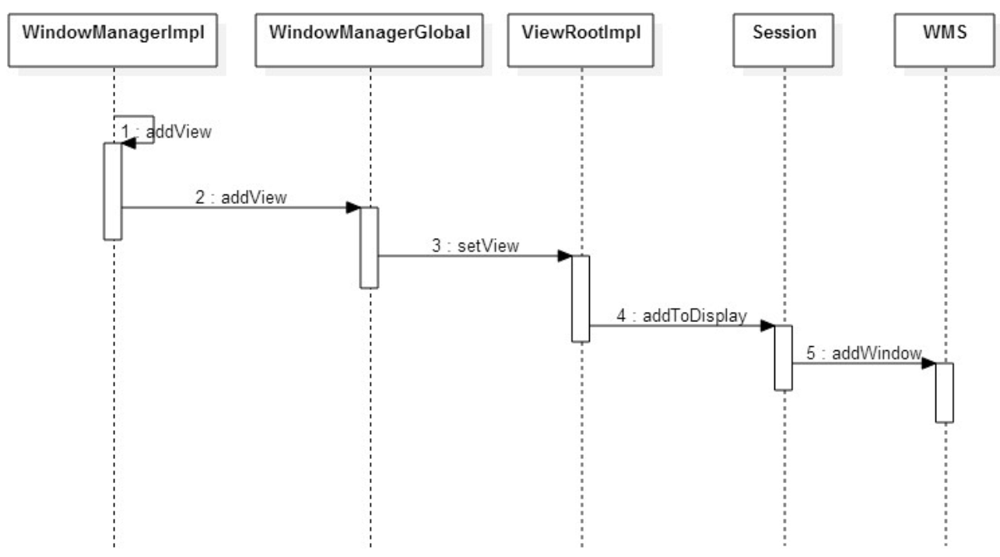
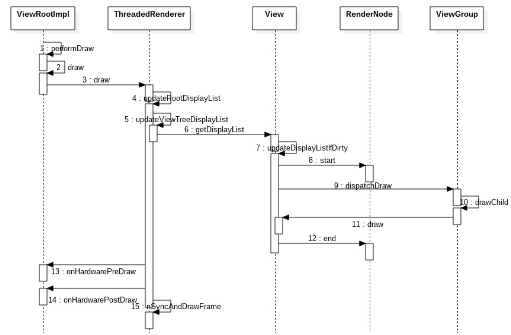

概述
Window 可以看做是Surface的一个包装，本质上，Window的本体就是一片Surface。将操作对象Surface，对象关联属性集以及操作方法等组合在一起便是 Window。Surface 其实是一块画布，应用可以随心所欲地通过 Canvas 或者 OpenGL 在其上作画，然后通过 SurfaceFlinger 将多块 Surface 的内容按照特定的顺序(ZOrder)进行混合并输出到 FrameBuffer，从而将 Android 漂亮的脸蛋显示给用户。既然每个窗口都有一块 Surface 供自己涂鸦，所以必然需要一个角色对所有窗口的 Surface 进行协调管理。于是,WMS 应运而生。
代码： http://aosp.opersys.com/xref/android-10.0.0_r2/xref/frameworks/base/core/java/android/view/
对应的关系：
- 1 IDirectFB (顶层) <–> N 屏幕(Screens)
- 1 屏幕(Screen) <–> N 层(Layers)
- 1 层(Layer) <–> 1 主表面(Primary Surface)
- 1 层(Layer) <–> N 窗口(Windows)
- 1 窗口(Window) <–> 1 窗口表面(Window Surface)
- 1 表面(Surface) <–> N 子表面(Subsurfaces)
Dump window信息
adb shell dumpsys window windows
1 | WINDOW MANAGER WINDOWS (dumpsys window windows) |
可以列出当前系统中存在的所有窗口。查看下该命令的输出可以发现Android是一个同时存在着多个窗口的系统。比如 StatusBar、NavigationBar、Activity、InputMethod、WallPaper 等窗口都可能同时存在。因为同时有多个窗口各自为政，所以需要 WMS 作为管理者来协调，以便窗口们能在狭窄的显示屏幕上和睦相处。
作为协调者，WMS的本职工作主要是负责管理各窗口的生命周期（创建/销毁）、各窗口的位置大小（Layout）、各窗口的显示层级（Z-order）以及窗口的显示属性（可见性等）。
相关类
- DisplayContent：一个容器，一个 DisplayContent 内收集了所有需要显示到相应屏幕上的窗口
- PhoneWindowManager：定义了 Phone 相关的窗口策略，负责为 WMS 提供各种建议，包括布局，事件处理，屏幕旋转等
- WindowAnimator WindowStateAnimator AppWindowAnimator： 主要负责 Surface 相关操作，包括创建，销毁，Surface 属性变更，动画等
- WindowToken AppWindowToken： WindowToken 的作用是将一组相关性紧密的窗口组织在一起。达到批量管理的效果
- WindowState： 一般被认为是 WMS 眼中的窗口，管理着关联窗口的所有属性状态信息
- AppWindowToken 根据 AMS 侧 Activity 的顺序有序排列，WindowState 根据 Layer 值有序排列。

WMS添加窗口流程（addView）
WindowManagerGlobal，是一个进程唯一的实例，也就是说无论在应用的任何角落调用addView，都会通过WindowManagerGlobal 来处理相应的请求。从理解出发，可以认为WindowManagerGlobal是一个App进程中窗口管理者。

1 |
|
调用WindowManagerGlobal的addView函数：
1 | Display display, Window parentWindow) { |
setView做了很多处理，主要的是调用requestLayout()和 mWindowSession.addToDisplay。见下面：
addWindow
1 | public void setView(View view, WindowManager.LayoutParams attrs, View panelParentView) { |
这里出现了mWindowSession，它的类型是 IWindowSession，是WindowManagerGlobal#sWindowSession的一个引用，进程唯一的实例。
它是常见的Binder远程调用中IWindowSession的Bp端，Bn端是一个Sessio 实例，存在于WMS所属进程，Session代表了WMS关于窗口管理服务的一个子集，Android 系统中，由App进程端主动向WMS发起的请求，都是通过mWindowSession进行的，也就是说Session提供了所有App进程能够请求WMS的服务请求。
调用到实现类Session.java:
1 | public int addToDisplay(IWindow window, int seq, WindowManager.LayoutParams attrs, |
最终调用到WMS.java的addWindow函数。addWindow的工作可以分为4步：
- WindowToken 检查
- WindowState 创建
- 将新建的 WindowState 插入到现有的 WindowState 有序列表里
- 给系统中现有的所有 WindowState 重新分配 Layer
1 | public int addWindow(Session session, IWindow client, int seq, |
relayoutWindow

Surface outSurface：输出参数，用于承载该窗口的 Surface，ViewRootImpl 获得此 Surface 便可以调用Draw在上面进行绘制窗口所承载的所有View。
关于 relayoutWindow 的处理内容粗略分为下列：
- 根据传入参数更新 WindowState 对象的对应属性，这些属性都会在布局的时刻用到。
- 根据传入的可见性参数处理窗口 Surface 的创建或销毁
- 处理一些由窗口更新带来的一些变化，如 Focus 变化，输入法窗口/壁纸窗口移动，屏幕构型 Configuration 改变等
- 执行 performLayoutAndPlaceSurfaceLocked 函数进行布局
View概述
View就是一块可以用来进行绘画，可以处理输入事件进行交互的矩形区域，而ViewGroup就是一种可以容纳View的矩形容器。
从设计模式的角度看，ViewGroup 和 View 是组合模式的典型应用。View 是基本的控件元素，ViewParent 接口定义了添加、删除 View 的接口 addView、removeView，ViewGroup 实现了 ViewParent 的接口，因此可以作为 View 的容器管理 View，同时 ViewGroup 又继承自 View，可以被其他的 ViewGroup 管理。这样 ViewGroup 和 View 就可以组成上面的树状结构了。

应用程序启动的过程中，会加载一个或者多个 Activity。每个 Activity 对应一个 PhoneWindow。当Activity在onCreate方法中调用 setContentView 的时候，PhoneWindow 会根据布局文件，创建 View 树，同时，根据应用的一些参数设置，得到集合了窗口显示特性的 View 树的根节点 mDecor 。WindowManagerGlobal 会通过数组记录一个应用程序对应的所有 View 树的根节点 mDecor，布局参数，以及对应的 ViewRootImpl。同时，将 mDecor 和布局参数传递给 ViewRootImpl。ViewRootImpl中实现对 View 树的整体控制，包括与 WMS 的通信，View 的描绘处理，输入事件的分发处理等。
View 的结构图如下：

基本元素
- View ：最基本的UI组件，表示屏幕上的一个矩形区域
- Window ：1〉 表示顶层窗口，管理界面的显示和事件的响应；2 〉每个Activity均会创建一个PhoneWindow对象，是Activity和整个View系统交互的接口。该Window在Activity的attach方法中通过调用
PolicyManager.makeNewWindow创建； - DecorView ：是Window中view的RootView
- WindowManager ：1〉 主要用来管理窗口的一些状态、属性、view 增加、删除、更新、窗口顺序、消息收集和处理等 2〉interface，继承自ViewManager。所在应用进程的窗口管理器；3〉实现类 WindowManagerImpl
- ViewRootImpl：1 〉界面控制和消息响应；2 〉通过IWindowSession接口与全局窗口管理器WMS进行交互
- ActivityThread：1〉 应用程序的主线程，其中会创建关联当前 Activity 与 Window；2〉创建 WindowManager 实现类实例，把当前 DecoView 加入到 WindowManager
View处理简单流程
VSYNC
VSYNC 信号，即 vertical synchronization，可以理解为垂直同步，或者帧同步。是 Android4.1 为了解决 UI 不流畅问题而引入的处理。当需要同步信号的时候，通过 Choreographer 注册回调，等到 VSYNC信号到来的时候，执行相应的回调。这样，一方面可以避免频繁更新导致的画面不流程；另一方面，因为 SYNC 信号的频率大概是 60 次/秒，即可以保证帧率 60，显示效果非常平滑。

由上图可见，View 的描绘工作，是在 performTraversals 中完成的。主要分为三步：
- performMeasure，负责计算View的尺寸；
- performLayout，负责计算 View 在界面上的位置；
- performDraw，根据前面两步的计算结果，完成实际的描绘工作。
performTraversals触发描绘处理
View 的描绘是通过 performTraversals 发起的，所以任何调到 performTraversals 的地方，都会触发描绘处理。
- ViewRootImpl 中初次添加 View:自上而下发起遍历。
- 应用主动调用 requestLayout:自下而上通过 mParent 调用父节点的 requestLayout，直至 ViewRootImpl。
- 应用主动调用 invalidate:自下而上通过 mParent 调用父节点的 invalidateChild，直至 ViewRootImpl。
- 其他情况：如应用程序的 Visibility 发生变化的时候，LayoutParams 发生变化的时候等，都会触发遍历操作。
performMeasure（测量）

1 | private void performMeasure(int childWidthMeasureSpec, int childHeightMeasureSpec) { |
1 | public final void measure(int widthMeasureSpec, int heightMeasureSpec) { |
1 | protected void onMeasure(int widthMeasureSpec, int heightMeasureSpec) { |
performLayout（布局）

performDraw（硬件渲染）
performDraw调用draw，完成绘制工作。实际绘制操作可以分为硬件渲染和软件渲染两种情况。
Step1. ViewRootImpl.setView
当mSurfaceHolder为空，也就是说应用不会要求自己接管对窗口的渲染的情况下，才会开始硬件渲染环境的准备。
Step2. ViewRootImpl.enableHardwareAcceleration
1 | public void setView(View view, WindowManager.LayoutParams attrs, View panelParentView) { |
- 常驻内存的进程，禁止使用硬件加速，因为非常耗费内存。
- 系统进程一般都要禁用硬件加速，但是以下两种情况除外：
(1) 应用启动之前的Starting Window，会通过设置以下flag，标示启用硬件加速，但是不缓存：
WindowManager.LayoutParams.PRIVATE_FLAG_FAKE_HARDWARE_ACCELERATED
(2) 锁屏界面，虽然是在系统进程中，但是通过设置以下 flag，可以启用硬件加速：
WindowManager.LayoutParams.PRIVATE_FLAG_FORCE_HARDWARE_ACCELERATED
其他情况，根据 Activity 窗口是否请求硬件加速渲染决定是否开启硬件加速。通过判断flags位
WindowManager.LayoutParams.FLAG_HARDWARE_ACCELERATED被置为1，同时硬件支持硬件加速，就可以继续后面的初始化工作了。
Step3: ThreaedRenderer.create
设备支持 Open GL ES2.0，就创建对象：ThreadedRender。
- 通过 nCreateRootRenderNode 在 Native 层创建一个 Render Node。
- 通过 adopt 方法，将 Native 层的 Render Node 封装成 Java 层的 Render Node。
- 通过 nCreateProxy 在 Native 层创建一个 Render Proxy 对象。该proxy对象以后负责从Main Thread向RenderThread发送命令。
RenderProxy 有三个重要的成员变量：
- mRenderThread：进程单例，指向 RenderThread 对象，通过它可以向 RenderThread 线程发送命令。
- mContext：画布上下文。RenderThread 通过它完成渲染工作。
- mDrawFrameTask：指向一个 DrawFrameTask 对象，Main thread 通过它向 Render Thread 线程发送渲染下一帧的命令。
Step4：ViewRootImpl.performTraversals
当得到了有效的surface，就通过ThreadedRender的initialize方法，将该surface与RenderThread绑定。
硬件渲染流程图

ThreadedRender.draw主要执行三个操作：
- 调用成员函数 updateRootDisplayList 构建或者更新应用程序窗口的 Root Render Node 的 DisplayList。RenderNode.start 和 RenderNode.end 直接的处理，与软件渲染的流程一样，只是硬件渲染的时候，只把渲染命令存储到 DisplayList 中，并不真正开始执行渲染操作。
- 调用成员函数 registerAnimationRenderNode 注册应用程序窗口动画相关的 Render Node 到 native 层。这些RenderNode是用于描述当前窗口设置的动画。
- 调用成员函数 nSyncAndDrawFrame，通知Render Thread绘制下一帧。其具体实现在 navtive 层。通DrawFrameTask 向 RenderThread 的 task Queue 抛出一个消息，等待 RenderThread 在合适的时候唤醒。
软件渲染
在 ViewRootImpld 的 draw()如果不进行硬件渲染，会进行软件渲染drawSoftware()
Step1. ViewRootImpl.Draw
- 计算窗口是否处于滚动状态。
- 计算 dirty 区域，也就是需要重绘的区域。
- Dirty 区域不为空，或者动画进行中，继续判断是否选择了硬件加速，如果没有使用硬件加速，则通过 drawSoftware（）发起软件渲染。
- 如果动画执行过程中，发起下一次轮询。
1 | private boolean draw(boolean fullRedrawNeeded) { |
Step2. ViewRootImlp.drawSoftware
通过 lockCanvas()获取画布。
Step3. Framelayout.draw(Canvas)
ViewRootImpl 中，通过 mView.draw(canvas)，调用 DecorView 的 draw 方法；DecorView 通过 super.draw(canvas)，调用父类 Framlayout 的 Draw 方法。
在 FrameLayout 中，通过 super.draw(canvas)方法，调用 View.draw 方法，触发实际的描绘处理。
Step4. View.draw
- 描绘背景。如果 PFLAG_DIRTY_OPAQUE 被设置，并且 mAttachInfo.mIgnoreDirtyState=flase，说明有不透明子view遮挡了当前的 view，不需要绘制背景。
- 保存当前画布的堆栈状态，并且创建额外的图层描绘当前视图滑动时的边框渐变效果。FADING_EDGE_VERTICAL 和FADING_EDGE_HORIZONTAL 都没有被设置的时候，不需要执行这步操作。
- 通过 onDraw 调用子类描绘处理，完成当前视图的描绘。
- 通过 dispatchDraw 调用子视图的描绘处理。
- 绘制边框的渐变效果（与步骤 2 对应），并且恢复图层。此步骤不是必需的。
- 如果需要显示滚动条，通过 onDrawScrollBars 调用描绘滚动条。
Step5. ViewGroup.dispatchDraw
FLAG_RUN_ANIMATION被设置，并且允许显示子视图的动画，则通过 bindLayoutAnimation 设置动画。设置完成后，通过LayoutAnimationController 的对象来启动动画，并且调用 mAnimationListener 的 onAnimationStart()来通知动画监听，当前视图开始显示动画了。- 如果子视图可见或者有动画需要显示，就通过方法 drawChild 实现子视图的绘制。
- 如果动画结束，通过notifyAnimationListener发送消息，通知动画监听者，动画已经结束。
Step6. ViewGroup.drawChild
调用子 view 的 draw(Canvas, ViewGroup,long)方法，实现子视图的绘制。
Step7. View.draw(Canvas, ViewGroup, long)
- 通过方法
drawAnimation实现动画的绘制。 - 通过flag检查子视图是否支持缓冲方式绘制。即将子视图缓冲到一个Bitmap中，后续可以通过getDrawingCache获得该bitmap。
- 以非缓冲的方式绘制：检查 SKIP_DRAW 标记是否被置位，如果为 1，则跳过当前视图的绘制，调用 ViewGroup 的dispatchDraw，重复前面过程，继续该视图的子视图的绘制；否则，通过调用 View.draw(Canvas)，重复 step4 的过程，完成当前视图的绘制以后，再发起子视图的绘制。
- 以缓冲的方式绘制：通过 canvas.drawBitmap()将上次缓冲的 Bitmap 对象 cache 绘制到画布上。
Step8. ViewRootImpl.drawSoftware
循环上面的过程，直到所有子视图都被绘制到画布上，返回 drawSoftware 方法。
通过 surface.unlockCanvasAndPost()方法，请求 SurfaceFlinger 服务渲染这块画布到图形缓冲区。
软件渲染流程图